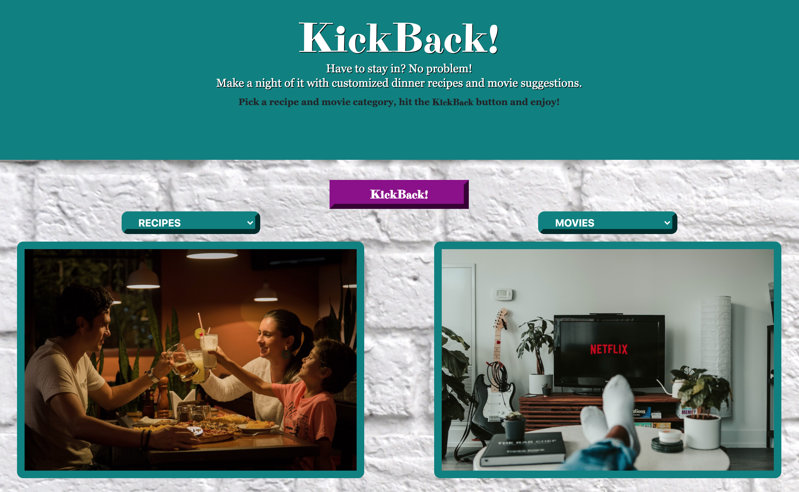

KickBack!
Project Overview
Roles: UX Design Lead, Front-end Developer
Time Period: 2 Weeks (July 2020)
Design Tools: Figma, Pen & Paper
Technologies: HTML5, CSS3, Bootstrap, JavaScript, OMDB API, MovieDB API, Spoonacular API
Background | User Interviews | User Personas | Problem Statement | User Story |
Decision Flow Diagram | Paper Sketching | Usability Testing | Low-Fidelity Wireframe |
User Testing Feedback | High-Fidelity Prototype | MVP | Retrospective & Future Development
In the wake of COVID-19, everyone is adjusting to the new normal. Social distancing requirements have forced people to drastically change their routines. Going out for dinner and a movie with friends has become an increasingly stressful activity. There’s a need to find recipes to cook and movies to watch at home every night of the week. Deciding what to eat and view can be frustrating and time-consuming in the best of times. During a pandemic... it’s overwhelming.
What if there was a simple, easy to navigate application that took the work out of deciding on the perfect night in?
Kickback! is a web application that randomly generates movie and recipe suggestions from the users’ choice of genre and cuisine type. Users visit the site, make two simple decisions, and let the app do the heavy lifting. After the app provides suggestions, users have the option to click-through to the recipe, and/or save both the movie and recipe for later. Kickback! makes it easier to stay in, relax and enjoy quality time with loved ones.
Instead of reaching out to a random sample of users, we decided to interview our coding classmates. We did this so that we could effectively work within the 2 week time constraint to design and build our app. Our main goals of the user interviews were:
- • Gain insight into how the quarantine was affecting their daily routine.
- o How often did they go out before the stay-at-home orders?
- o How likely were they to cook dinner and watch a movie at home pre-pandemic? During the pandemic?
- • Understand how they were using apps to make daily decisions.
- o Were they using apps before the pandemic to make recipe and movie decisions?
- o If yes, what were their pain points while using the apps?
- o If yes, what features did they like about the apps?
The individuals we interviewed ranged from age 21-50; were single, married with children and in relationships. Their professions were student, audio engineer, residential property owner/manager, receptionist, and teaching assistant. With our limited sample, we captured a wide range of ages, life stages, and careers, which helped us in better understanding our broad user base. The information gathered from the interviews revealed some common themes.
- • All of the users had been “moderately” to “very” social outside of their homes’ pre-pandemic.
- • 40% of the users were likely to cook at home at least twice a week pre-pandemic. 80% of the users were likely to cook at home at least twice a week during the pandemic.
- • All of the users were likely to watch a movie at home at least once a week both pre-pandemic and during the pandemic.
- • 40% of users were using apps to find recipes pre-pandemic. 60% of users were using apps to find recipes during the pandemic.
- • All users used streaming apps to find movies to watch both pre-pandemic and during the pandemic.
- • Users who used streaming services wanted the search feature to be more specific. There was a general sentiment that there were too many choices returned in searches.
- • Users who used recipe apps found that they couldn’t always save the recipes, which would make it easier to make a grocery list later or cook the dish more than once.
- • Users who used recipe apps enjoyed the ability to search by cuisine type, ingredients and cooking difficulty level. Similarly, the users who used the streaming services liked the ability to search by genre.
After the interviews were conducted, I created two user personas to visually represent the information we gathered. These tangible representations reminded us to keep our users’ needs and goals at the center of our design.


Recipe and streaming apps are designed to make searching for dishes and movies easier. After our initial research, we found that this isn’t always the case. Often streaming apps provide the users with too many choices and recipe apps don’t have enough features to fully satisfy the consumer. With this knowledge, we set out to develop one application that improved upon both recipe and streaming apps.
To illustrate the expectations and goals of a user who comes to our apllication, I created a simple user story.

We came up with a decision flow that addressed the problem statement and provided a solution that would help ease pain-points.

Each group member created a paper sketch that satisfied their idea of the application.

We created and tested a rapid prototype based on the sketches. We found that there was no way of telling if the information chosen was actually being captured, so we decided to add a button to the design. This also turned out to be a necessary adjustment for engineering, as a button was required for the functionality to work properly. Additionally, after researching the intended recipe API, we found it would be difficult to anticipate the length of each recipe. Instead of using a scroll feature to account for the overflow text, we chose to have photo of the final dish and allow the user to click-through to the recipe's original site.
Using our decision flow diagram, wireframe sketches, and feedback from our users, I created an initial set of low-fidelity wireframes in Figma. These take the users through Kickback! First, they get to the site, followed by choosing a cuisine type and movie. After hitting the Kickback button, they are shown one movie and one recipe suggestion. If they want to know more about the recipe, they can clickthrough. To change their recipe and movie choice, or to save the recipe and movie, they return to the Kickback page. Once finished, the user can view their previously saved movies and recipes.

After testing with our classmates, they suggested we add some instructions for how to maneuver the site. This would lead to a better user experience.
I incorporated the user feedback into a high-fidelity design that included additional text, final fonts and color pallet. I also took the time to create a logline and find royalty-free photos that conveyed the overall fun, family-friendly tone of our site.
Once all of the research and prototyping was complete, we were able to confidently begin building the application. Since we had little time, we decided which features could be included in our MVP. Our MVP has the following functionality:
- • Allows users to choose cuisine type and movie genre.
- • Allows both movies and recipes to be saved.
- • Gives users the ability to clickthrough to see the recipes on their original site.
Our MVP exceeded both our expectations and project requirements.
VISIT SITE
Kickback! fills a unique opening in the market for consumers who are figuring out how to navigate the new realities of social distancing in a post COVID-19 world. It addresses the need consumers have to make quick decisions about recipes and movies on a daily basis. Through future development, KickBack! will allow for brands to serve targeted ads to users. Future development plans include:
- • Enhance user experience by adding additional API to find which streaming services host the movie suggestions.
- • Allow users to search by movie rating and recipe difficulty.
- • Add feature to allow users to see where movies suggestions are being streamed.
- • Develop additional screen that shows saved movies and recipes.
- • Scale app by adding additional APIs for movie theaters, restaurants, and delivery services.
- • Make app sponsorable by designing capability to serve ads (video and banner).
Ultimately, KickBack! will become a one stop destination for people to plan how they will spend their perfect night in during the pandemic and beyond!
← Back to Portfolio